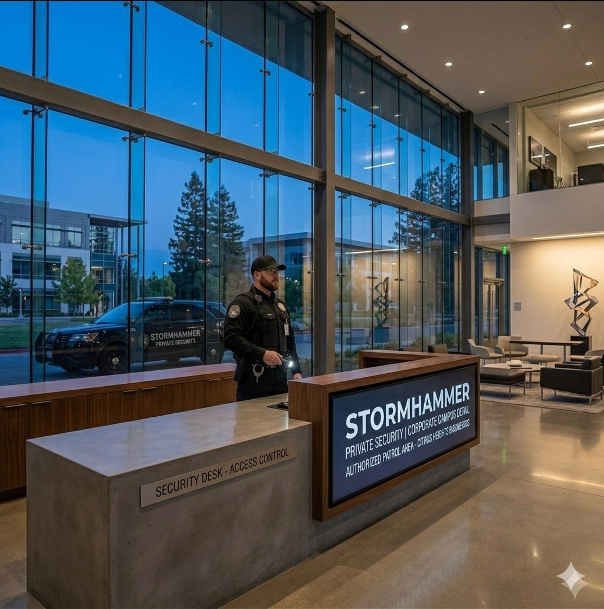
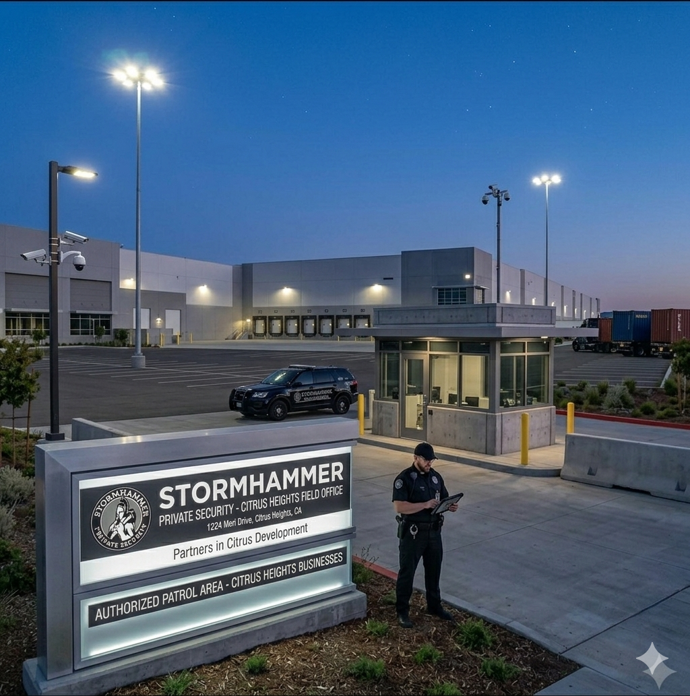

Hyper-Local Security Patrol Services
Stormhammer Security provides structured security patrol services in Citrus Heights, California, focused on visibility-based deterrence and environmental awareness across commercial and residential zones.


Citrus Heights Coverage Zones
Serving ZIP codes 95610 and 95621 across major corridors and mixed-use environments.



Commercial Corridors & Activity Zones
- Sunrise Boulevard
- Greenback Lane
- Auburn Boulevard
- Antelope Road


Neighborhood Coverage Areas
- Sunrise Oaks
- Birdcage Heights
- Sylvan District
- Arcade Creek Area

Understanding Security as Environmental Behavior
Security in Citrus Heights operates as a dynamic environmental system where visibility, movement, and perception influence risk exposure. Stormhammer Security applies structured patrol cycles that reinforce visibility and reduce uncertainty across commercial and residential zones.
Corridors like Sunrise Boulevard and Greenback Lane represent transitional environments where activity shifts rapidly between high and low visibility periods. Mobile patrol systems help stabilize these transitions by maintaining consistent oversight presence.
Request Security Patrol Services
Contact Stormhammer Security for patrol availability in Citrus Heights and surrounding Sacramento County regions.